Красная книга - основной государственный документ, учрежденный в целях выяления редких и находящихся под угрозой исчезновения диких животных, дикорастущих грибов и растений.
История создания Красной книги берёт начало в 1949 году, когда коллектив ученых из Международного союза охраны природы и природных ресурсов предложил создать "Комиссию по редким видам". Задача комиссии состояла в составлении перечня животных, птиц и растений, которые находятся под угрозой исчезновения, а так же выработка рекомендаций по их охране.
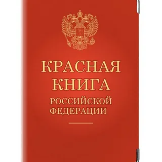 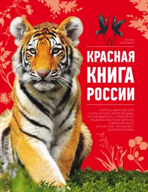1. Амурский тигр
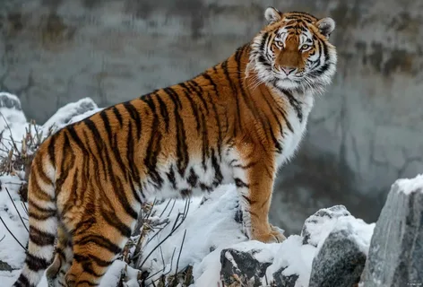2. Азиатский гепард
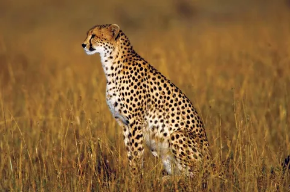3. Амурский леопард
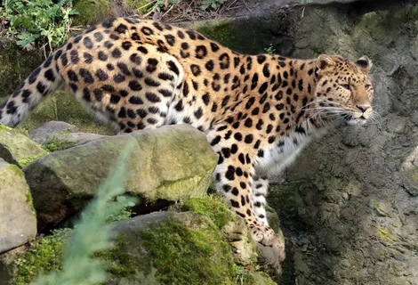4. Беломордый дельфин
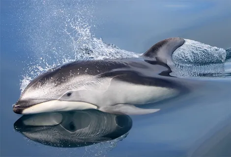5. Сивуч
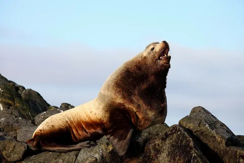6. Морж атлантический
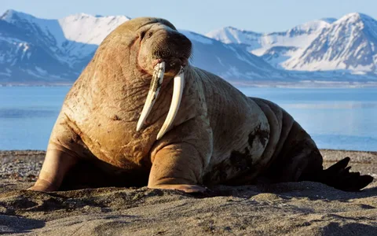7. Западнокавказский тур или кавказский горный козел
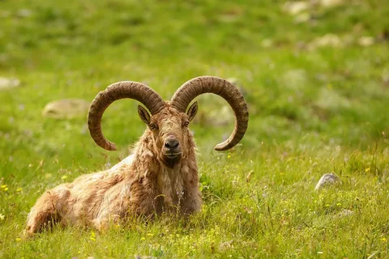8. Амурский горал
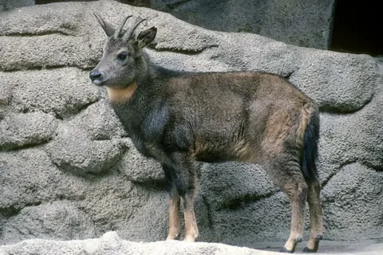9. Лошадь Пржевальского
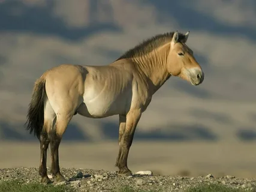10. Красный или горный волк
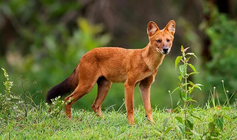 страница про редких птиц